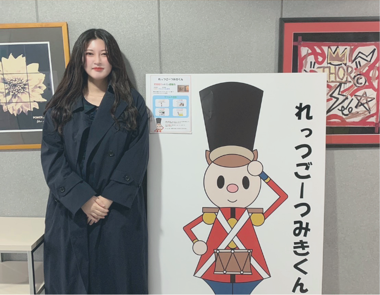

ABOUT
永野 詩葉ながの ことは
WEBデザイナー,UI/UXデザイナー希望
2002年7月14日生まれ。
大阪府大阪市出身。HAL大阪在学中。
自分が満足するデザインではなくそれを見てくれている人を
幸せにできるものを作りたい。
そんな思いを抱きながらものづくりをしています。
美味しいものを食べ、お酒を楽しみ、
そしてたまにひとりで遠出をする。そんな人間です。
WEBデザイナー,UI/UXデザイナー希望
2002年7月14日生まれ。
大阪府大阪市出身。HAL大阪在学中。
自分が満足するデザインではなくそれを見てくれている人を
幸せにできるものを作りたい。
そんな思いを抱きながらものづくりをしています。
美味しいものを食べ、お酒を楽しみ、
そしてたまにひとりで遠出をする。そんな人間です。
I want to make people happy through design
デザインとは言っても一般的に考えられる視覚的に得られる見た目のことだけではなく、
ものづくりの中で行う制作目的のデザイン。
設計のデザイン。機能のデザイン。見た目のデザイン。これらを全て含めたものがデザインだと私は考えております。
便利。使いやすい。操作しやすい。見やすい。美しい。楽しい。
こういった体験を人に感じてもらうのが人を幸せにしたなと感じる瞬間です。
SKILL
AWARD